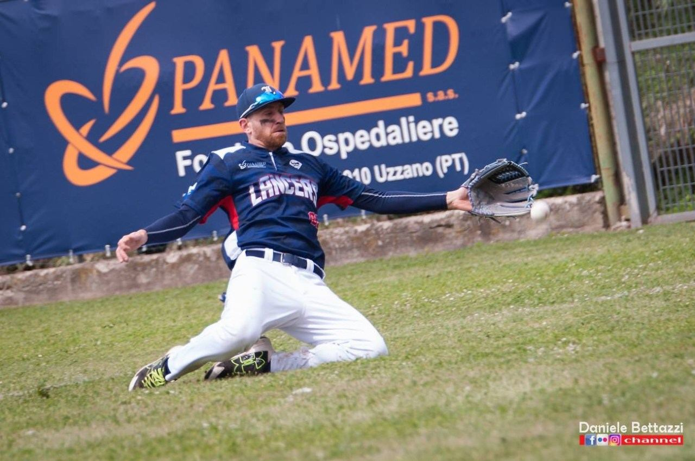
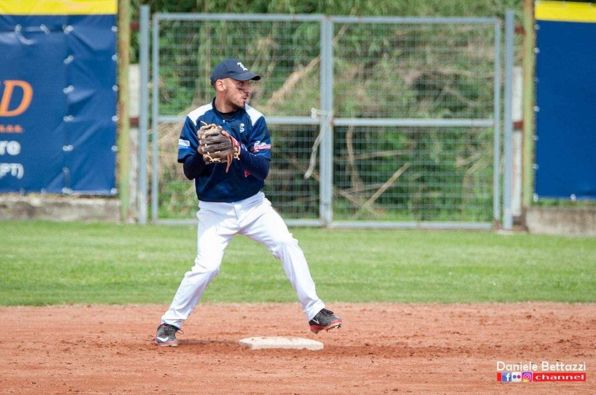

Nella gara mattutina il Poviglio mostra tutto il suo arsenale offensivo con una prestazione da 17 battute valide (10 solamente dal 3°, 4° e 5° spot del lineup), il lanciatore partente Vannini questa volta non riesce a contenere le mazze avversarie che sfruttono il momento positivo segnando tre punti al primo e altri quattro al terzo.
I lastrigiani tentano una timida rimonta e segnano un punto sia al secondo che al terzo, il partente del Poviglio D’Amico lavora bene alternando buona velocità a lanci ad effetto che mandano fuori tempo i Lancers, il lanciatore venezuelano mostra anche un controllo di categoria maggiore.
Dopo altri due punti subiti nella quarta ripresa i lastrigiani iniziano a controllare gli avversari, sul monte Apata subentrato al partente, amministra per quattro riprese con palle veloci e buon controllo.
All’ottavo Lapini rileva il compagno di squadra mancino e chiude in maniera impeccabile anche questo attacco avversario, lo staff tecnico si dice molto felice della prestazione del lanciatore lastrigiano che recentemente aveva trovato poco spazio in rotazione.
Al nono attacco riusciamo a produrre un solo punto sul solito D’Amico che firmerà quindi il complete game con la vittoria del Poviglio per 9 a 3, merito anche di un attacco composto almeno da quattro atleti sudamericani di buon livello.
In gara 2 arriva un’altra partita sconsigliata ai deboli di cuore, una gara fatta di sorpassi e contro sorpassi, belle giocate difensive e battute decisive.
Vannuzzi viene designato come partente, un giusto premio per le ultime buone uscite del lanciatore lastrigiano DOC, l’infield resta quello di gara uno con Diaz, Parrini, Baratella sulle rispettive basi e Rudaj shortstop.
All’esterno confermato Geri al centro, Nerbini a sinistra sostituisce Bosi (designato primo rilievo) e Glielmi a destro fa lo stesso con Nannucci. 
Il Poviglio risponde subito con il pareggio e al secondo sembra indirizzare anche questa gara sui propri binari sfoderando un’altra prova di forza con le mazze che porta altri 4 punti alla causa azzurra.
Al cambio campo recuperiamo segnando tre volte sul partente avversario, al quarto invece arrivano i punti del pareggi e del sorpasso per il momentaneo 6 a 5 a nostro favore.
Poviglio si dimostra un avversario ostico e, sul rilievo Bosi, alla quinta ripresa emula i lastrigiani segnando a sua volta il pareggio ed il vantaggio, il tabellone adesso segna 6 a 7 per i locali.
Come successo a Rovigo, e contro il Lucca in casa, i ragazzi di Gentilini e Ciappi si uniscono per centrare l’obiettivo comune della vittoria, alla sesta ripresa arrivano ben 3 punti frutto di buone battute e un calo del monte avversario, il caldo si fa sentire ma i Lancieri sfruttono al meglio l’occasione e siglano ancora un punto al settimo portandosi avanti di 3 runs.
Bosi sul monte chiude bene gli attacchi avversari supportato da una difesa più attenta, da incorniciare la presa in tuffo di Baratella che chiude la settima ripresa.
All’ottavo inning il team povigliese costruisce le ipotetiche basi della rimonta segnando due punti che li porta quindi allo scarto minimo, adesso bastano altri due punti al nono per centrare la doppietta.
Ed ecco che il cuore bianco blu entra in gioco, contro la parte alta del lineup (fino a quel momento 23 valide nei due incontri) Bosi e compagni fanno definitivamente muro, il lanciatore lucchese si rende protagonista di un out fondamentale in prima su bunt e un altro in seconda.
Il terzo e ultimo out lo confeziona Nannucci all’esterno destro contro il quarto in battuta ed il punto del pareggio parcheggiato in terza, una gran corsa sulla battuta potente e profonda con un grande lavoro di guanto chiude definitivamente un’altra memorabile e sfiancante partita.
Nel turno appena trascorso pareggiano tutti quanti e la classifica resta immutata, prossimo impegno sul campo di via Livornese contro il Pianoro reduce dalle gare (gara 1 vinta e gara 2 persa) contro la seconda della classe Junior Parma.
L’atteggiamento dovrà essere sempre lo stesso, i Lancers non possono permettersi di valutare gli avversari dalla posizione in classifica.